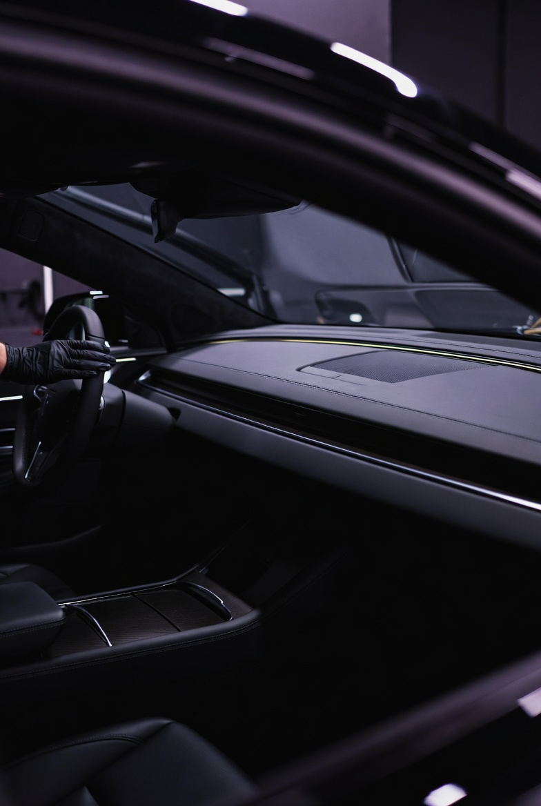

Invändig rekond
600 kr
Boka tid ↗Läs mer →En fräsch kupé. Ett omsorgsfullt resultat.
Invändig rengöring med hänsyn till bilens ytor och material.

Damm, smuts och vardagens spår påverkar känslan i bilen. Med invändig rekond får kupén den omsorg den behöver.
Alla priser anges i svenska kronor (SEK).
600 kr
Boka tid ↗Läs mer →Kontakta oss för pris på övriga behandlingar. Vid polering bedömer vi lackens skick och bekräftar priset innan arbetet påbörjas.
Hör av dig så hjälper vi dig att välja rätt behandling.
Boka tid · WhatsApp ↗ Kontakta oss ↗